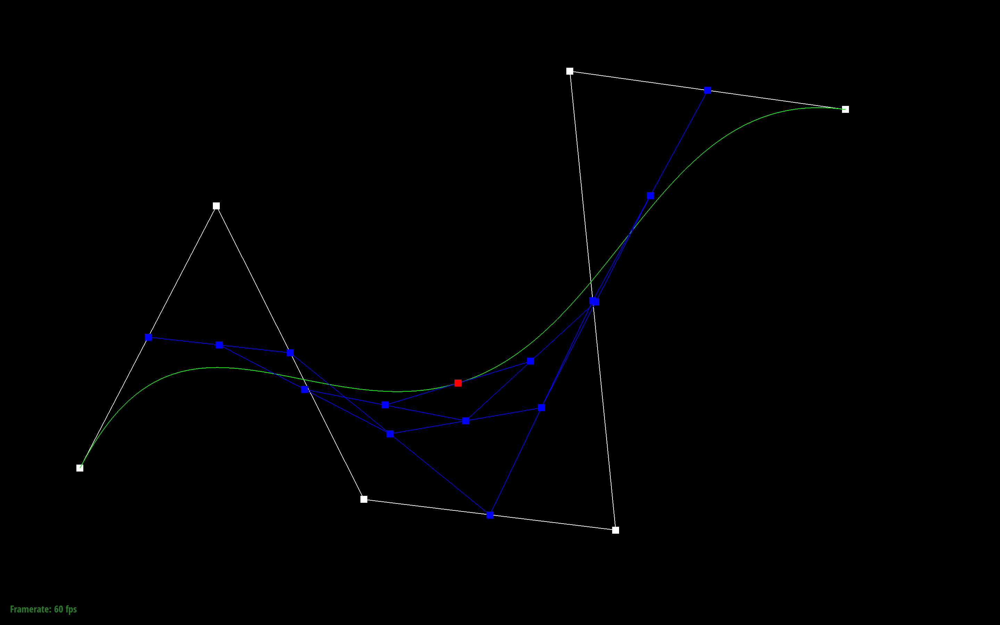
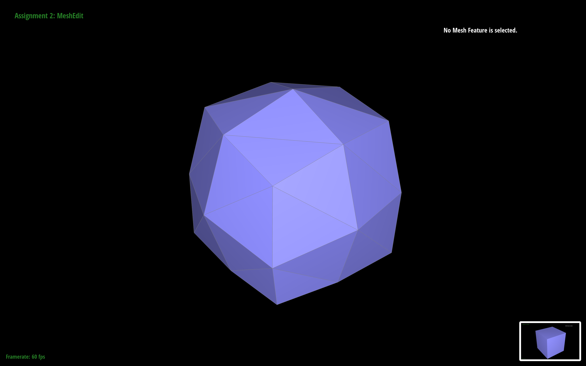

Overview
This project dives into geometric modeling. For the first part of the project, we'll use de Casteljau's algorithm to create smooth curves and surfaces and apply it to shading. In the latter half, we work on triangle meshes and implement edge flipping and splitting to create higher resolution models.
Section I: Bezier Curves and Surfaces
Part 1: Bezier Curves with 1D de Casteljau Subdivision
Briefly explain de Casteljau's algorithm and how you implemented it in order to evaluate Bezier curves.
Casteljau's algorithm is a method for creating curves between points.
My implementation iterated across the points, calculating the linear interpolation of all pairs of adjacent points. I then return a vector of the interpolated points which
Take a look at the provided .bzc files and create your own Bezier curve with 6 control points of your choosing. Use this Bezier curve for your screenshots below.
Look below!
Show screenshots of each step / level of the evaluation from the original control points down to the final evaluated point. Press E to step through. Toggle C to show the completed Bezier curve as well.
|
|
|
|
|

|
|
|
|
|

|
|
Show a screenshot of a slightly different Bezier curve by moving the original control points around and modifying the parameter \(t\) via mouse scrolling.
Part 2: Bezier Surfaces with Separable 1D de Casteljau
Briefly explain how de Casteljau algorithm extends to Bezier surfaces and how you implemented it in order to evaluate Bezier surfaces.The de Casteljau algorithm extends beyond two-dimensional points. Higher dimensions, in this case 3D points can also be interpolated and smoothed. Repeatedly applying the interpolation step to a set of control points allows us to create a Bezier patch.
Show a screenshot of bez/teapot.bez (not .dae) evaluated by your implementation.
Section II: Triangle Meshes and Half-Edge Data Structure
Part 3: Area-Weighted Vertex Normals
Briefly explain how you implemented the area-weighted vertex normals.
I implemented area-weighted vertex normals with the following algorithm:
- Iterate across the neighboring triangles
- For all the vertices in a triangle, compute the area and normal of the face.
- Add the area-weighted normal (face area * normal) to a cumulative vector.
- After adding all area-weighted normals, average it by the number of triangles.
- Return the unit normal of the average.
Show screenshots of dae/teapot.dae (not .bez) comparing teapot shading with and without vertex normals. Use Q to toggle default flat shading and Phong shading.
|
|
|
Part 4: Edge Flip
Briefly explain how you implemented the edge flip operation and describe any interesting implementation / debugging tricks you have used.I primarily followed the implementation guide. I drew out the flipped diagram, switching the labeling in accordance with the guide. I began by collecting all the elements (halfedges, vertices, edges, and faces). I then set the neighbors for all halfedges following the diagram. I assigned halfedges to vertices by picking the halfedges on the inner face. I assigned halfedges to edges similarly. Lastly, I assigned the halfedges of the original edge to the faces on the corresponding sides.
Show screenshots of the teapot before and after some edge flips.
Write about your eventful debugging journey, if you have experienced one.
My debugging journey was terrible. I wrote most my code at 1am, where I misread my handwriting. My 3s and 5s, along with my 1s and 7s look very similar. It was a struggle. Things became a lot easier when I had sleep and daylight, looked at the printed diagram, and was like "I hate it". I also had cases where flipping twice would result in missing faces, this was fixed by correctly assigning neighbors.
Part 5: Edge Split
Briefly explain how you implemented the edge split operation and describe any interesting implementation / debugging tricks you have used.I drew out a much uglier diagram than the last (sad!) I collected all the elements yet again (copy-pasted from part 4). I then allocated all the new elements needed. (one new vertex in the center, 3 new edges extending from the center, 6 new halfedges for those 3 edges, and two new faces). I followed a diagram I drew (I'll include this in the debugging section), and painstakingly set all the halfedges, vertices, edges, and faces. I set the new vertex's position to the midpoint of the original edge. I marked two of the edges that didn't lie on the original edge new.
Show screenshots of a mesh before and after some edge splits.
|
|
|
Show screenshots of a mesh before and after a combination of both edge splits and edge flips.
Write about your eventful debugging journey, if you have experienced one.
So I had a very similar journey as before, a combo of handwriting and a late night. But here we are, alive.
If you have implemented support for boundary edges, show screenshots of your implementation properly handling split operations on boundary edges.
I did not.
Part 6: Loop Subdivision for Mesh Upsampling
Briefly explain how you implemented the loop subdivision and describe any interesting implementation / debugging tricks you have used.I followed the recommended approach. I began by computing new positions for all vertices by iterating over the halfedges and taking the original neighbor position sum. I used that sum to calculate the new position according to the provided formula. I then updated the vertex positions associated with edges with the provided formula. I made sure the vertices and edges had their "isNew" variable set to false since they already exist. I then go and split every old edge, conditioning on the edge and both attached vertices being old. I then flip any edge connecting and old and new vertex. Lastly, I copy the new positions over since we use newPosition as an intermediate.
Take some notes, as well as some screenshots, of your observations on how meshes behave after loop subdivision. What happens to sharp corners and edges? Can you reduce this effect by pre-splitting some edges?
I noticed that the sharp edges get rounded out and lose their definition (this is much more apparent with the cube). I was unable to observe a substantial
|
|
|
|
Load dae/cube.dae. Perform several iterations of loop subdivision on the cube. Notice that the cube becomes slightly asymmetric after repeated subdivisions. Can you pre-process the cube with edge flips and splits so that the cube subdivides symmetrically? Document these effects and explain why they occur. Also explain how your pre-processing helps alleviate the effects.
The cube's surfaces round out as we continue to subdivide. I attempted to split the edges on the faces so that it wouldn't round out. Since there are more triangles to subdivide, the cube is able to retain its flat faces. The edges disappeared because I wasn't careful with how granular I got with the splitting.
|
|

|
|
|
|
|
|
If you have implemented any extra credit extensions, explain what you did and document how they work with screenshots.
YOUR RESPONSE GOES HERE
Part 7 (Optional, Possible Extra Credit)
Save your best polygon mesh as partsevenmodel.dae in your docs folder and show us a screenshot of the mesh in your write-up.YOUR RESPONSE GOES HERE
Include a series of screenshots showing your original mesh and your mesh after one and two rounds of subdivision. If you have used custom shaders, include screenshots of your mesh with those shaders applied as well.
YOUR RESPONSE GOES HERE
Describe what you have done to enhance your mesh beyond the simple humanoid mesh described in the tutorial.
YOUR RESPONSE GOES HERE